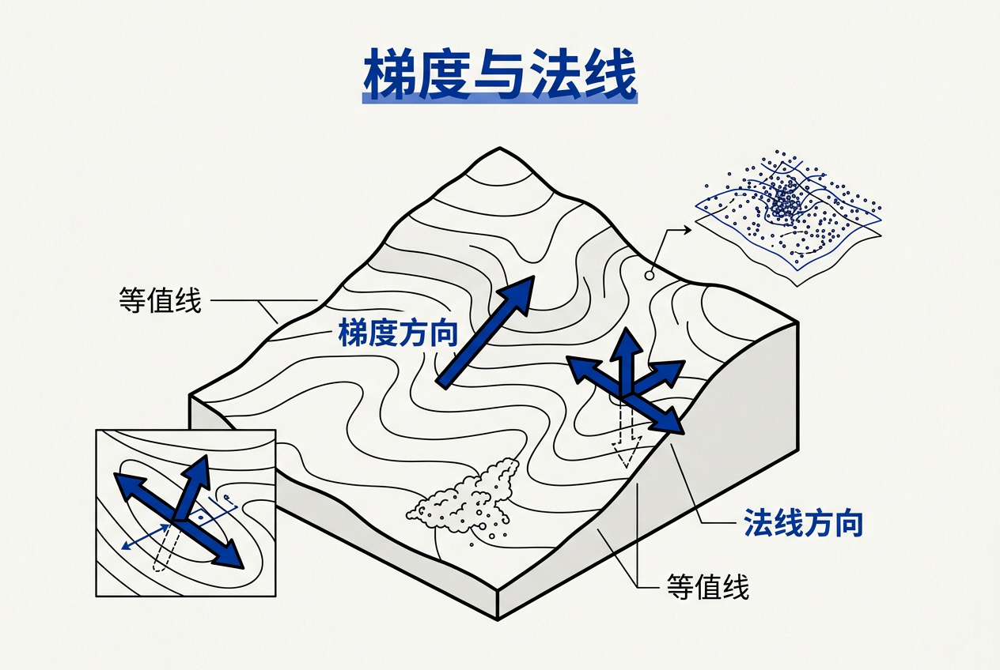
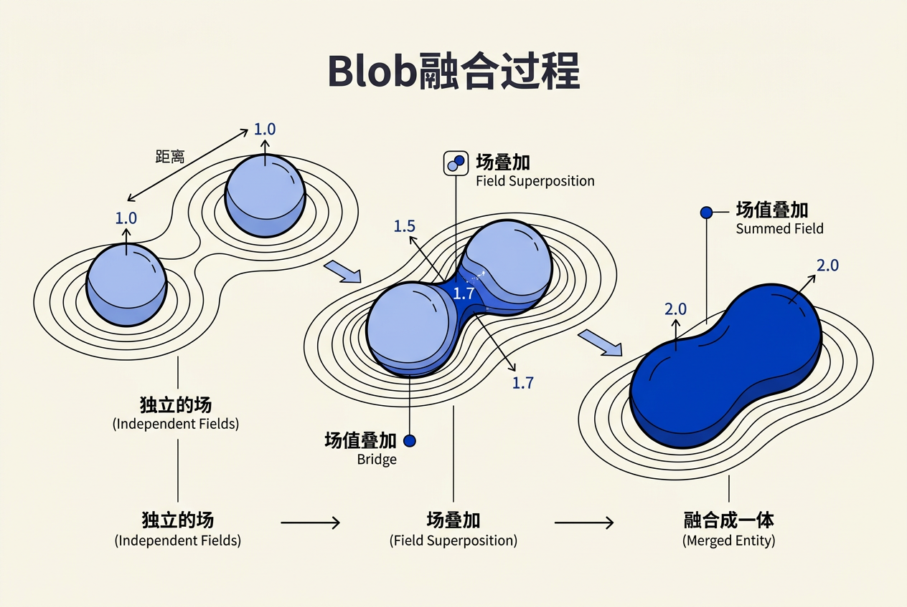
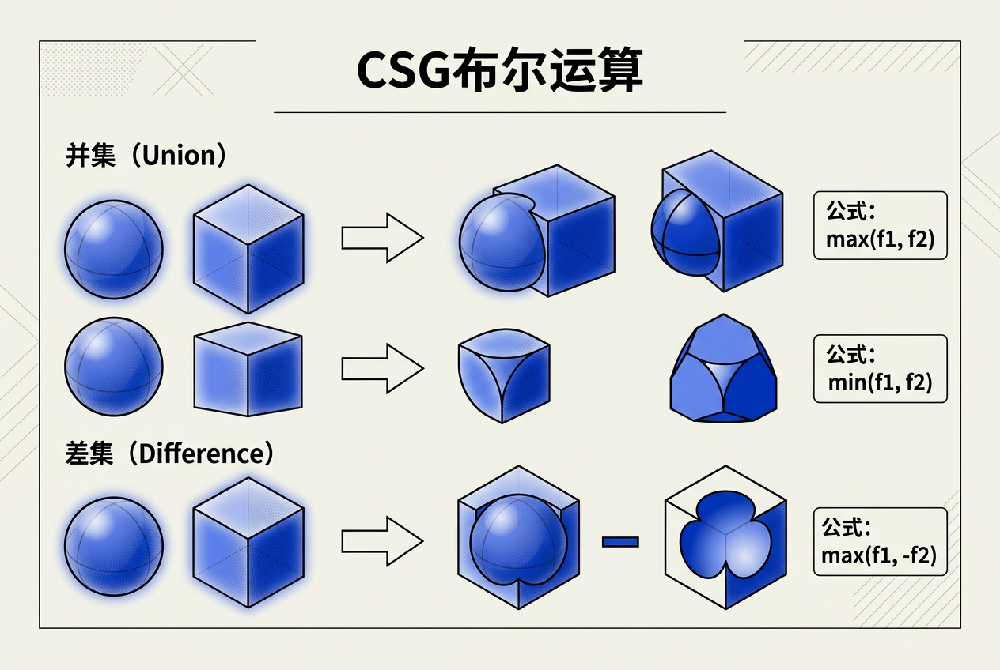
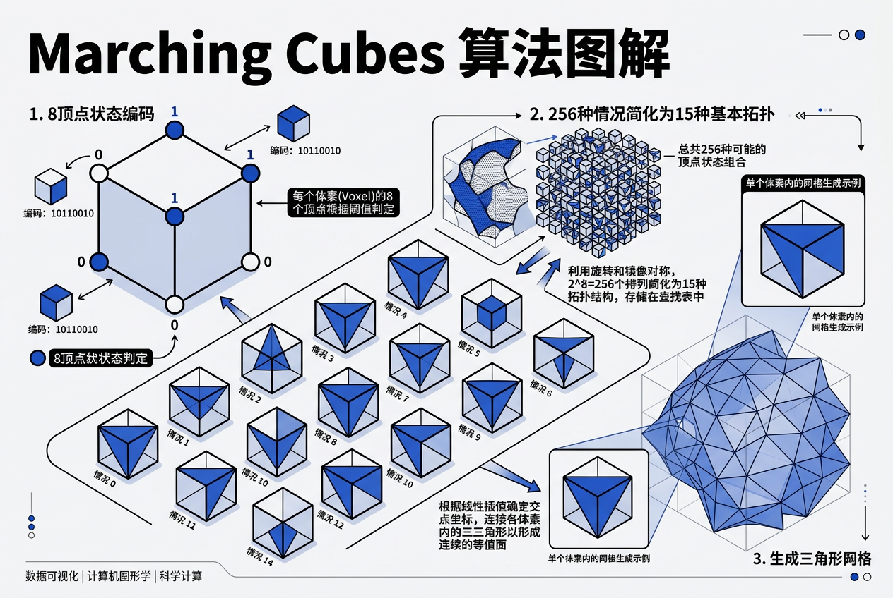
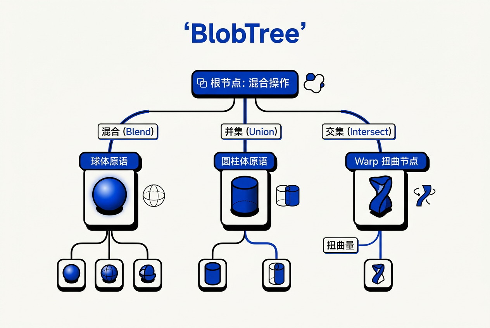

第21章：隐式建模 — 零基础讲义
讲义说明
本讲义基于 Steve Marschner & Peter Shirley 所著《虎书5》第5版第21章（p.595-622）。
核心问题：不用"顶点列表"定义形状，而是用"数学公式"定义——f(x,y,z) = 0= 表面。
本版插画采用 Guizang 材质插画风格重新绘制。
21.0 前置数学：偏导和梯度，从零讲起
这是"前置数学扫盲"章节——如果你对偏导和梯度只有一个模糊的印象，这里帮你彻底理清。这两个概念是理解隐式建模的数学基础。
21.0.1 偏导数：只看 x 方向的变化
这是在解决什么问题：一个函数 f(x,y) 有多个变量。你没法"同时对 x 和 y 求导"，所以先固定 y 只看 x 的变化——这就是偏导。
函数：f(x, y) = x² + y²
偏导 ∂f/∂x（读作"偏 f 偏 x"）：
用中文说就是：把 y 当作常数，只看 x 的变化。
把 y 固定，f 对 x 求导 → ∂f/∂x = 2x
含义：在点 (x, y) 处，沿 x 方向走一小步，f 会变多少
偏导 ∂f/∂y：
用中文说就是：把 x 当作常数，只看 y 的变化。
把 x 固定，f 对 y 求导 → ∂f/∂y = 2y
含义：在点 (x, y) 处，沿 y 方向走一小步，f 会变多少
生活类比：
你站在一个山坡上，地面高度 = f(x,y)
∂f/∂x = "向东走一步，高度变化多少"
∂f/∂y = "向北走一步，高度变化多少"
两个偏导各自告诉你"一个方向"的变化率
21.0.2 梯度：上坡最快的方向
这是在解决什么问题：偏导数给了你"一个方向"的变化率，但你想知道"哪个方向变化最快"——梯度就是所有偏导拼成的向量，指向最陡的上坡方向。
例子：f(x,y) = x² + y²
∇f = (2x, 2y)
在点 (1, 0) 处，∇f = (2, 0)
用中文说就是：在 (1,0) 这个点，沿 x 正方向走 f 增加最快（上坡），
沿 y 方向 f 不变（水平）。
梯度的三个核心用途：
① 表面法线：∇f / |∇f| = 表面的法线方向
② 最大值方向：梯度指向 f 最大的方向
③ 最小值方向：-∇f 指向 f 最小的方向（下坡方向）
21.0.3 梯度 = 表面法线
这是在解决什么问题：在隐式曲面 f(x,y,z)=0 上，我们需要知道"表面朝向"。不用存顶点法线——梯度免费给你法线！
这一点是隐式建模的"免费午餐"——显式建模需要存大量的顶点法线数据（48字节/顶点），隐式建模的法线是公式自带的。

21.1 什么是隐式建模？
21.1.1 显式 vs 隐式——根本区别
这是在解决什么问题：传统的"显式"建模用三角形顶点定义形状，处理"点是否在物体内部"非常麻烦。隐式建模用数学公式定义形状——代入一个点立刻知道内外。
显式建模（多边形）：
"这个球由 1000 个三角形的顶点列表定义。"
你有一个点 → 问"这个点在球表面吗？" → 要跟所有三角形判断 → 麻烦。
隐式建模：
"这个球由公式 x² + y² + z² - 1 = 0 定义。"
你有一个点 → 代入公式 → 正数（在外面）/ 零（在表面）/ 负数（在里面）
→ 简单！
21.1.2 核心对比表
| 维度 | 显式（多边形） | 隐式（场） |
|---|---|---|
| 定义方式 | 顶点 + 三角形 | 标量函数 f(p) = iso† |
| 找表面点 | 遍历三角形 | 二分法求 f(p)=0 |
| 判断内外 | BVH† + 法线测试（复杂） | sign(f(p)) 一个字 |
| 拓扑变化 | 重建网格（昂贵） | 改公式即可（便宜） |
| 法线计算 | 存顶点法线或叉乘 | ∇f / |∇f| 免费 |
| 光线求交 | 三角形求交（快） | ray marching（慢） |
21.2 隐式方程的核心思想
21.2.1 最简单的隐式曲面：球
这是在解决什么问题：用公式定义球体。代入任意一个点 (x,y,z) 就能知道它在球内、球外还是球表面。
用中文说就是：
对于任意点 (x,y,z)：
如果 f < 0（x²+y²+z² - r² < 0）→ 点在球内部
如果 f = 0（x²+y²+z² - r² = 0）→ 点在球表面上
如果 f > 0（x²+y²+z² - r² > 0）→ 点在球外部
例子（手算）：
球半径 r = 2
点 A(0, 0, 0):
f = 0² + 0² + 0² - 2² = -4 < 0 → 球内部 ✓
点 B(0, 0, 2):
f = 0² + 0² + 2² - 2² = 0 → 球表面 ✓
点 C(3, 0, 0):
f = 3² + 0² + 0² - 2² = 9 - 4 = 5 > 0 → 球外部 ✓
公式变成 f = x²/a² + y²/b² + z²/c² - 1 = 0，其中 a、b、c 分别是三个轴方向的半径。还是同样的判断逻辑——代入点的坐标看 f 的正负。
21.2.2 隐式的核心优势：任意拓扑
这是在解决什么问题：显式模型如果两个球要融合成一个"花生"形状，你得重建所有的三角形——非常麻烦。隐式模型只需要把两个球的公式加起来——自动融合！
两个球融合 → 隐式表达式：
球 1: f₁(x,y,z) = x² + y² + z² - 1²
球 2: f₂(x,y,z) = (x-1.5)² + y² + z² - 1²
融合后的场：
f(x,y,z) = f₁ + f₂
取 f = 某个等值面（比如 f = 0.5）→ 两个球"融化在一起"
用中文说就是：把两个球各自的"场值"相加 →
两个球连接处场值变高 → 自然融合！
21.3 骨骼原语与求和混合（Blob）
21.3.1 骨骼原语（Skeletal Primitive）
这是在解决什么问题：每个基本形状（球、线、环）是一个"骨骼"†，它定义了一个"距离函数"——空间任意一点到它的距离。
| 符号 | 含义 | 用中文说就是 |
|---|---|---|
| di(p) | 点 p 到骨骼 i 的最短距离 | "到骨骼有多远" |
| gi(r) | 衰减函数 | "距离→影响力的换算公式" |
| fi(p) | 骨骼 i 在点 p 的场值 | "这个点感受到的影响力" |
21.3.2 四种衰减函数
| 名称 | 公式 | 用中文说就是 | 特点 |
|---|---|---|---|
| Blinn (Gaussian) | g(d) = e^(-r·d²) | "高斯钟形曲线——越远越弱" | 光滑、无限范围、计算贵 |
| Metaball | 分段多项式 | "三段拼接——近处是、中间过渡、远处没有" | 有限范围、C¹ 光滑 |
| Soft Objects (Wyvill 3次) | (1-d²/r²)³ | "三次衰减——从近到远平滑变0" | 有限范围、C² 光滑 |
| Wyvill（简单版） | (1-d²/r²)³ | "最简版本——平方再立方" | 最快计算 |
21.3.3 求和混合（Summation Blending）
这是在解决什么问题：一个骨骼只定义了一个形状。求和混合把所有骨骼的场值加起来，得到一个"总场"。物体的表面就在"总场 = 某个值"的等值面上。
21.4 Blob 求和手算例子
这是在解决什么问题：通过手算几个点的场值，直观理解"两个球融合"的数值过程。光看公式可能抽象，算一遍就懂了。

设定
骨骼 1：球心在 (0, 0, 0)，半径 r₁ = 1，衰减系数 c₁ = 1
骨骼 2：球心在 (2, 0, 0)，半径 r₂ = 1，衰减系数 c₂ = 1
衰减函数：g(d) = e^(-c·d²)
总场：f(p) = g₁(d₁) + g₂(d₂) = e^(-d₁²) + e^(-d₂²)
等值面：f(p) = 0.5（取等值线 iso = 0.5）
计算点 A(0, 0, 0) —— 第一个球的球心
d₁ = |A - 球心₁| = |(0,0,0) - (0,0,0)| = 0
d₂ = |A - 球心₂| = |(0,0,0) - (2,0,0)| = 2
g₁ = e^(-0²) = e⁰ = 1.000
g₂ = e^(-2²) = e⁻⁴ = 0.018
f(A) = 1.000 + 0.018 = 1.018
f(A) > 0.5 → 点 A 在表面内部 ✓
用中文说就是：球心处场值最大，肯定在物体里。
计算点 B(1, 0, 0) —— 两个球的中点
d₁ = |B - (0,0,0)| = 1
d₂ = |B - (2,0,0)| = 1
g₁ = e^(-1²) = e⁻¹ = 0.368
g₂ = e^(-1²) = e⁻¹ = 0.368
f(B) = 0.368 + 0.368 = 0.736
f(B) > 0.5 → 中点也在物体内部 ✓
用中文说就是：两个球中间场值叠加，形成一个"鼓包"——融合了。
计算点 C(1.5, 0.8, 0) —— 边界外一点
d₁ = √(1.5² + 0.8²) = √(2.25+0.64) = √2.89 = 1.70
d₂ = √((1.5-2)² + 0.8²) = √(0.25+0.64) = √0.89 = 0.94
g₁ = e^(-1.70²) = e⁻²·⁸⁹ = 0.056
g₂ = e^(-0.94²) = e⁻⁰·⁸⁸⁴ = 0.413
f(C) = 0.056 + 0.413 = 0.469
f(C) ≈ 0.47 < 0.5 → 点 C 在表面外部 ✓
用中文说就是：离两个球都远了，场值衰减到临界值以下。
手算总结
| 点 | 位置 | f 值 | 在表面内？ | 含义 |
|---|---|---|---|---|
| A | (0, 0, 0) | 1.018 | 是 | 球心处场值最高 |
| B | (1, 0, 0) | 0.736 | 是 | 两球中间叠加，融合 |
| C | (1.5, 0.8, 0) | 0.469 | 否 | 边界外 |
从 A→B→C，场值从 1.018 降到 0.469。等值面 f=0.5 就在 B 和 C 之间穿过 → 这就是物体的表面！
两个本来分离的球，因为中间的场值叠加 > 0.5 → "融合"成一体。
21.5 构造实体几何（CSG）
21.5.1 CSG = 组合形状
这是在解决什么问题：求和混合是隐式建模的"软融合"方式。但有时候你想要"硬切割"——比如在球上打个方洞。CSG（Constructive Solid Geometry）†就是做这个的。

| 操作 | 数学公式 | 用中文说就是 |
|---|---|---|
| 并集（Union）A ∪ B | f = max(fA, fB) | "属于 A 或者 B" ≈ 选最靠近表面的 |
| 交集（Intersection）A ∩ B | f = min(fA, fB) | "同时属于 A 和 B" ≈ 选到最近表面的距离 |
| 差集（Difference）A - B | f = min(fA, 2·iso - fB) | "属于 A 但不属于 B" |
21.5.2 CSG 的直观例子
例 1：球 ∩ 立方体 = 球被立方体裁剪
球：f₁ = x² + y² + z² - 1²
立方体：f₂ = max(|x|, |y|, |z|) - 0.75
交集：f = min(f₁, f₂)
结果 = 球被切掉四个角，变成一个八分之一球体形状。
例 2：球 - 圆柱 = 球被圆柱打洞
球：f₁ = x² + y² + z² - 1²
圆柱（沿 y 轴）：f₂ = max(√(x²+z²) - 0.3, |y| - 1.5)
差集：f = min(f₁, -f₂)
结果：属于球、但不属于圆柱 → 球被圆柱挖掉一块。
21.5.3 min/max 的问题——折痕（Crease）
这是在解决什么问题：min 和 max 在两个表面交汇处会产生"折痕"（数学上叫 C⁰ 不连续†）——视觉上看起来像尖锐的边。
| 解决方案 | 公式 | 效果 |
|---|---|---|
| ① 简单粗糙 | 接受折痕 | 机械零件风格 |
| ② R-function | R_min(f₁,f₂) = f₁+f₂ - √(f₁²+f₂²) | C¹ 连续布尔运算 |
| ③ softmin | softmin(a,b,k) | k 控制光滑半径 |
21.6 Marching Cubes：把场变成网格
这是在解决什么问题：隐式模型没有顶点，你没法直接用 GPU 画。Marching Cubes 把隐式场 f(p)=iso 的等值面变成三角形网格，这样就能用传统管线渲染了。

21.6.1 核心思路
① 划分空间：把场景切成很多小立方体（体素/voxel†）
② 对每个立方体：检查它的 8 个顶点在等值面的"哪一侧"
③ 每个顶点 = 0（内侧）或 1（外侧）→ 8 个顶点 = 一个 8 位二进制数（0~255）
④ 查表：每种 8 位组合对应一种三角形排列方式
⑤ 插值：在立方体边上精确找到等值面的位置
用中文说就是：
把空间切成无数个小块，
对每个小块检查"哪些角在物体里面、哪些在外面"，
根据角的内外分布——决定这个小块里放几个三角形。
21.6.2 从 256 到 15——降低 94%
这是在解决什么问题：8 个顶点，每个 2 种状态（内/外），总共 2⁸ = 256 种情况。但很多只是旋转/镜像了一下，本质一样。按对称性归类后只剩 15 种。
为什么从 256 降到 15？
核心观察：很多"情况"本质上是相同的，只是旋转/镜像了一下。
例子：
情况 1：只有顶点 0 在内部 → 切出一个三角形
情况 256 = 只有顶点 7 在内部 → 位置不同，但结构一样
（旋转一下就是情况 1）
所以——
256 种具体排列 → 按旋转/镜像归类 → 15 种拓扑结构
用中文说大白话：
"256 种情况里面，很多只是转了个方向、翻了个面，
抽掉这些重复的，真正不一样的三角形排列方式只有 15 种。"
21.6.3 算法步骤
Step 1：把空间划分为规则的体素网格（如 64x64x64 个立方体）
Step 2：对每个立方体：
a. 计算 8 个顶点的场值 f(p)
b. 每个顶点判断在 iso 内（f < iso）还是外（f > iso）
c. 8 个判断结果组成一个 8-bit 索引（0~255）
d. 用索引查表 → 得到三角形列表
e. 用线性插值在边上找到准确的 f = iso 位置
Step 3：输出所有三角形 → 三角网格！
用中文说就是：
64×64×64 = 262,144 个立方体，每个切出 0~5 个三角形
总三角形数 ≈ 几十万到几百万
这就是隐式模型"多边形化"的标准方法。
21.6.4 常见问题
| 问题 | 现象 | 原因 | 解决方案 |
|---|---|---|---|
| 歧义（Ambiguity） | 相邻立方体三角形不匹配 | 一个面的 4 个顶点出现"两两对角"模式 | 在面中心加采样点 / 拆四面体 |
| 网格精度不够 | 曲面看起来"块状" | 体素太大 | 加密网格 / 用自适应网格 |
| 内存爆炸 | 256³ 网格 → 几千万个立方体 | 均匀网格太粗暴 | 用 Octree / OpenVDB |
| 帧间抖动 | 动画时三角形跳变 | 线性插值在动态场中不稳定 | 用更稳定的求根法 / 时间连贯性缓存 |
21.7 更多混合方式（Ricci Blend）
21.7.1 为什么求和不够？
这是在解决什么问题：求和 f = f₁ + f₂ 只是简单相加——两个球中间会凸起。如果你想要控制凸起的形状（平一点、尖一点、还是变成布尔运算）怎么办？
| n 值 | 效果 | 用中文说就是 |
|---|---|---|
| n = 1 | f = f₁ + f₂ 求和混合 | 标准"鼓包"融合 |
| n → +∞ | f → max(f₁, f₂) 并集 | 不鼓包，硬边 |
| n → -∞ | f → min(f₁, f₂) 交集 | 布尔运算 |
| n 在中间 | 从融合到布尔平滑过渡 | 可以逐帧动画 |
21.8 形变（Warp）
21.8.1 Warp 的核心思想
这是在解决什么问题：不改变物体本身，而是"扭曲它周围的空间"——先扭曲空间坐标，再用原来的公式判断。这是隐式建模独有的能力：你扭曲了空间，物体就跟着变形。
用中文说就是：
① 给定一个点 p
② 你先问 "这个点被扭曲后到了哪里？" → w(p)
③ 再用原始场的公式算 w(p) 的场值
④ 这个值就是扭曲后物体在 p 点的场值
重要的直觉：你不是在变形物体，你是在变形空间！
21.8.2 三种基本 Warp
| 类型 | 公式 | 生活类比 |
|---|---|---|
| Twist（扭转） | z 轴越高，xy 旋转越大 | 像拧毛巾 |
| Taper（锥化） | y 越高，xy 方向越收窄 | 像削铅笔 |
| Bend（弯曲） | 绕某个轴弯曲坐标 | 像掰弯一根铁丝 |
21.9 精确接触建模（PCM）
21.9.1 问题描述
这是在解决什么问题：两个隐式物体靠近时，如果不做特殊处理，它们会"互相穿透"。PCM（Precise Contact Modeling）让它们"刚好贴在一起"——就像两个水泡触碰但不融合。
标准求和混合：两个球靠近 → 自动融合（像水泡合并）
PCM：两个球靠近 → 接触但不融合（像两个气球挤在一起）
用中文说就是：在接触面上，A 的场值被 B"推开"，
B 的场值被 A"推开"。
实现方式：
在 A 上加一个形变函数 s_A(p)，让 A 在接触区域"收缩"
在 B 上加一个形变函数 s_B(p)，让 B 在接触区域"收缩"
确保 s_A(p) 和 s_B(p) 恰好抵消对方的渗透
21.10 BlobTree
这是在解决什么问题：BlobTree 是把所有隐式操作组织成一棵树——就像场景图（Scene Graph†）但专门给隐式建模用。

21.10.1 节点类型
| 节点类型 | 子节点数 | 说明 |
|---|---|---|
| [Primitive] | 0（叶节点） | 骨骼原语（球、圆柱、环等） |
| [Warp] | 1（单目） | 空间扭曲（twist/taper/bend） |
| [Blend (+)] | 2（二叉） | 求和混合 |
| [Union (∪)] | 2（二叉） | max 并集 |
| [Intersection (∩)] | 2（二叉） | min 交集 |
| [Difference (-)] | 2（二叉） | 差集 |
| [Affine] | 1（单目） | 平移/旋转/缩放 |
21.10.2 遍历算法
要计算 BlobTree 在点 p 处的场值：
函数 f(节点 N, 点 p):
如果 N 是基本形状 → 直接算 f(p)
如果 N 是 Warp → 先扭曲 p → f(N的子节点, w(p))
如果 N 是 Blend → f(左子, p) + f(右子, p)
如果 N 是 Union → max(f(左子, p), f(右子, p))
如果 N 是 Intersection → min(f(左子, p), f(右子, p))
如果 N 是 Difference → min(f(左子, p), -f(右子, p))
21.11 隐式 vs 显式对比
| 维度 | 显式（多边形网格） | 隐式（场） |
|---|---|---|
| 存储 | 顶点数 × 48B（顶点+法线+UV...） | 函数参数（几个数）或体素 N³×4B |
| 判断内外 | BVH + 法线测试 | sign(f(p)) O(1) |
| 拓扑变化 | 重建网格非常麻烦 | 改参数或加公式即可 |
| 法线 | 存或叉乘算 | ∇f/|∇f| 免费 |
| 渲染 | GPU 原生、极快 | 要 Marching Cubes 或 raymarching |
| 布尔运算 | 慢、易出错 | min/max → 快、精确 |
| 融合 | 不可能自动融合 | 求和混合 → 自动融合 |
| 内存 | 随细节线性增长 | 体素随细节立方增长（OpenVDB 可优化） |
工程选型建议
| 场景 | 用哪个？ | 原因 |
|---|---|---|
| 大世界建筑/地形 | 显式 | GPU 渲染快、内存可控 |
| 软体物理、流体 | 隐式 | 拓扑自动变化、融合自然 |
| UI 字体/描边 | 隐式（SDF） | 无限缩放不失真 |
| 机械 CAD | 混合（B-rep + CSG） | 布尔精确 + 渲染快 |
| 角色皮肤变形 | 显式蒙皮 | GPU 原生、性能好 |
| 科学可视化 | 隐式 + Marching Cubes | 等值面是自然的可视化方式 |
21.12 总结
核心要点
| 编号 | 要点 | 通俗理解 |
|---|---|---|
| ① | 隐式建模 = 用公式 f(p)=iso 定义形状 | 不用顶点列表，用数学公式 |
| ② | 偏导 = 只看一个方向的变化 | "向东走一步的变化率" |
| ③ | 梯度 = 最陡上坡方向 = 表面法线免费拿 | 不用存法线，算梯度就行 |
| ④ | Blob 融合 = 所有骨骼场值求和 | "影响力叠加"自动融合 |
| ⑤ | CSG 操作 = min/max 布尔运算 | 并=max，交=min，差=min(fA,-fB) |
| ⑥ | Marching Cubes: 256→15 种三角形配置 | 对称性归类，查表即可 |
| ⑦ | Warp = 扭曲空间，不是扭曲物体 | 先变形坐标，再算场值 |
| ⑧ | BlobTree = 隐式建模的场景图 | 树形组织所有操作 |
隐式建模 = 用 f(x,y,z)=0 定义万物。同一个场函数 → 判断内外（O(1)）→ 求法线（梯度免费）→ 求和融合（自动拓扑）→ Marching Cubes 变网格（统一输出）。这一套工具链是 SDF、体积云、软体物理、NeRF 等技术的基础。